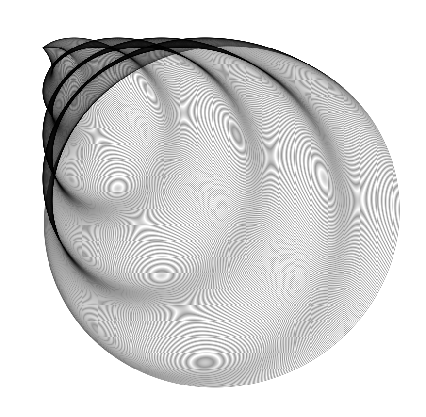
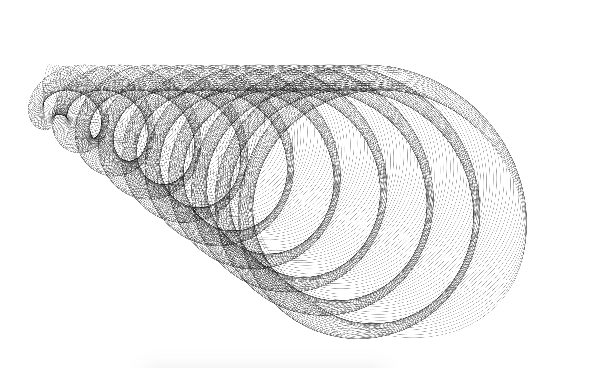
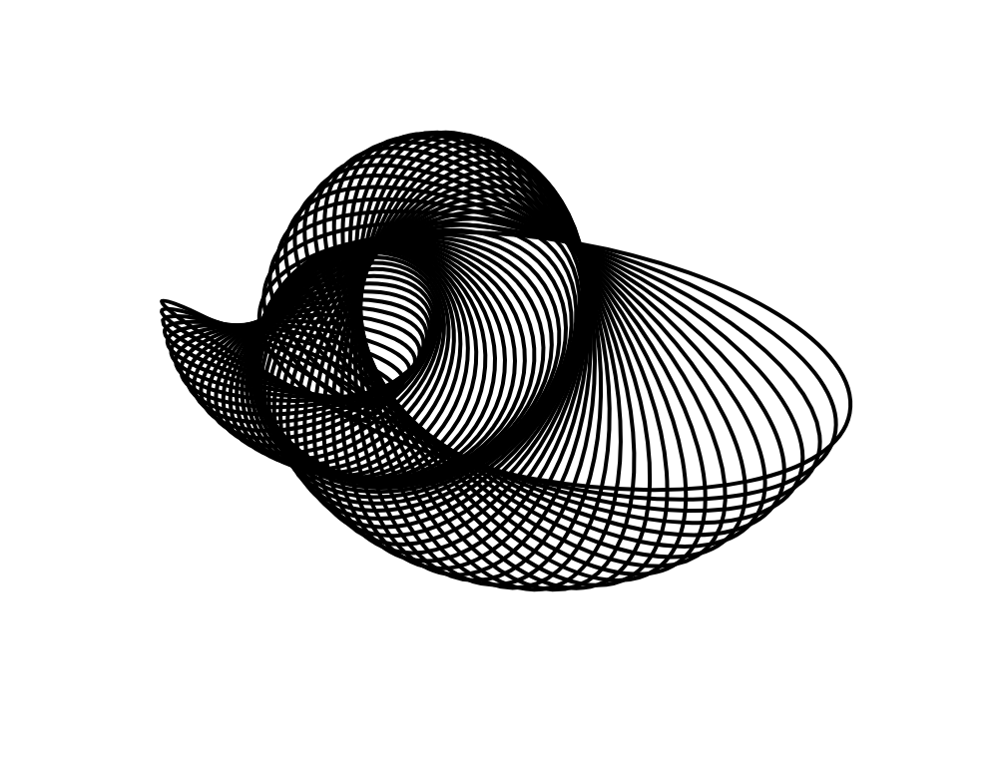

This is a collection of sketches I created using P5 and Javascript.
I focused on a different
element of coding for each sketch series to create interesting visuals and expand my knowledge on Javascript.
The code behind these flowers was simple yet effective.
Using noise as the focus of my study, I observed a clear rotational
pattern and integrated bright saturated colors to create these floral images.


The Logo Programming language, created by Seymour Papert and Cynthia Solomon, introduced Turtle graphics to help children learn problem solving and critical thinking. Using these concepts, I created these spiral figures.


